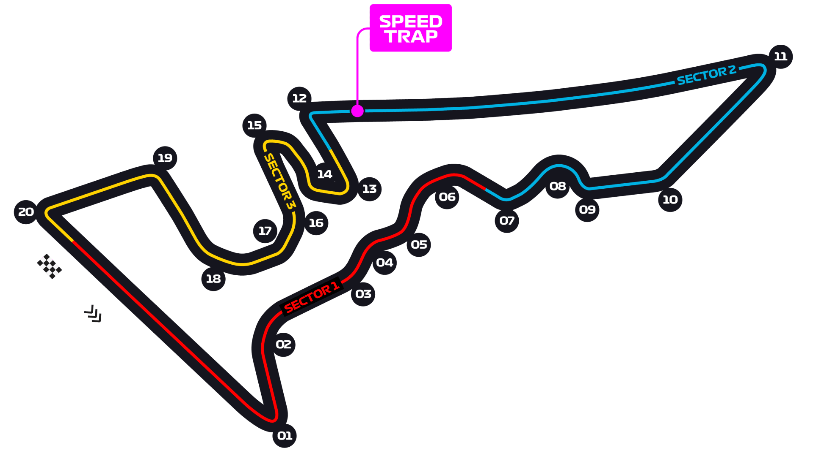

Circuit of The Americas, Austin Circuit Guide
A greatest-hits layout: a steep uphill run to a blind first corner, an Esses sequence lifted from Silverstone's Maggotts-Becketts, and a stadium section. Notoriously bumpy from ground movement, which hurts stiff modern cars.
Circuit map

Corners that matter
Turn 1
Steep uphill, blind apex, huge braking zone — the signature corner and a major passing spot.
Turns 3–6 — the Esses
Fast direction changes that reward aerodynamic platform control.
Turn 12
End of the long back straight; the second, and often best, overtaking place.
Where the passes happen
Good. Two DRS zones feeding heavy braking zones (Turns 1 and 12) create repeatable passing opportunities and frequent position swaps.
What it does to the tyres
High energy through the Esses combined with traction demands in the stadium section; blistering and graining both appear. Bumps add to the tyre workload.
Worth knowing
Circuit notes
- First Grand Prix: 2012.
- Track bumps have previously been severe enough to prompt resurfacing work and driver complaints — always worth checking the Friday reaction.
- A sprint venue in several recent seasons; check the 2026 format before assuming practice running.